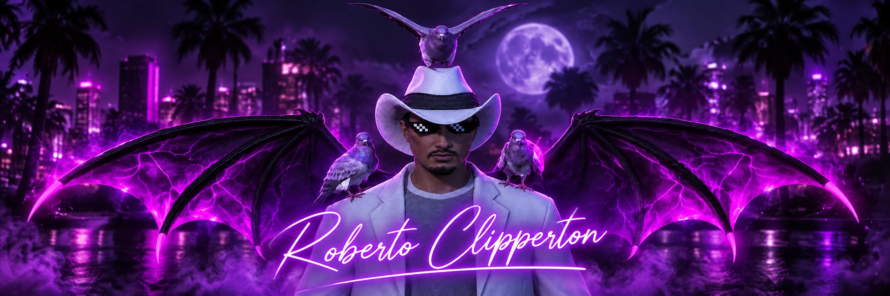

OOC / Über mich
- Vorname
- Eik
- Alter
- 18 Jahre
- Zeitzone
- Schweiz (MEZ / MESZ)
- Discord
- mr.ghost.x

Mirage DE01 · Bewerbung
Roberto Clipperton · Aktuell HR-Leitung im FIB
Hallo liebes Admin-Team. Ich möchte mich als Administrator Ebene 2 auf Mirage DE01 bewerben. Ich war auf einem anderen Server schon einmal Admin und würde diese Aufgabe gern auch hier übernehmen. Auf den nächsten Seiten stelle ich mich vor und erzähle euch, warum ich Teil des Teams werden möchte.
Respect the role. Fear the standard.
Steckbrief
OOC und im Spiel
Erfahrungen
Auf Mirage DE01 und auf einem anderen Server
Ich bin aktuell die HR-Leitung im FIB auf Mirage DE01.
Auf einem anderen Server war ich schon einmal Admin. Dabei habe ich gemerkt, dass mir die Arbeit mit Spielern gefällt. Mal braucht jemand nur eine kurze Antwort, mal muss man sich eine Situation genauer anschauen. Beides gehört für mich dazu. Auf Mirage DE01 habe ich noch nicht als Admin gearbeitet. Darum möchte ich eure Regeln und Abläufe in Ruhe lernen und bei Fragen lieber einmal mehr nachhaken.
Ich möchte zuerst verstehen, was passiert ist, bevor ich etwas entscheide. Gerade bei Streit zwischen Spielern gibt es oft zwei unterschiedliche Sichtweisen. Ich würde mir beide anhören, die Fakten prüfen und dann so klar wie möglich erklären, wie ich zu meiner Entscheidung komme.
Motivation
Bewerbung als Administrator Ebene 2
Ich spiele gerne auf Mirage und möchte den Spielern auch ausserhalb meines eigenen RP helfen. Besonders der Live-Support spricht mich an, weil man dort direkt mit Menschen zu tun hat. Wenn jemand eine Frage hat oder eine Situation feststeckt, möchte ich erreichbar sein und dabei helfen, sie ordentlich zu klären. Die Arbeit als Admin kenne ich bereits von einem anderen Server und ich würde sie gerne wieder machen.
Ich bin aktuell die HR-Leitung im FIB. Dazu kommt meine frühere Zeit als Admin auf einem anderen Server. Ich weiss aber auch, dass Mirage eigene Regeln und eine eigene Arbeitsweise hat. Ich möchte nicht mit dem Gedanken anfangen, schon alles zu können. Ich will zuhören, Fragen stellen und mich Schritt für Schritt einarbeiten.
Vor allem möchte ich euer Regelwerk so gut kennen, dass ich Spielern sicher und verständlich antworten kann. Schwierige Fälle werden am Anfang Zeit brauchen, und das ist für mich in Ordnung. Wenn ich einen Fehler mache oder etwas nicht weiss, spreche ich es an und lerne daraus.
Weitere Fragen
Live-Support und das Team
Ich würde ihn erst einmal ausreden lassen und versuchen, die Situation zu verstehen. Auch wenn der Ton unfreundlich wird, möchte ich ruhig bleiben. Danach schaue ich mir an, was passiert ist, und erkläre meine Entscheidung so, dass der Spieler sie nachvollziehen kann. Wenn mir Informationen fehlen, frage ich nach oder hole jemanden aus dem Team dazu.
Ich möchte offen mit den anderen sprechen können, gerade wenn ich bei etwas unsicher bin. Mir ist wichtig, dass man sich gegenseitig hilft und Absprachen einhält. Unterschiedliche Meinungen wird es immer geben. Dann sollte man sie in Ruhe besprechen können, ohne dass daraus ein persönliches Problem wird.
Ja. Wenn ich ins Admin-Team komme, bin ich bereit, mein RP-Leben für die Admin-Arbeit zurückzustellen. Mir ist klar, dass der Support Zeit braucht und ich nicht beides gleichzeitig in den Vordergrund stellen kann.
[Hier deine persönliche Antwort eintragen. Der Besitz eines Unternehmens ist während der Admin-Tätigkeit eingeschränkt.]
Schluss
Ich würde mich freuen, wenn ihr mir die Chance gebt, mich im Admin-Team zu beweisen. Ich kenne die Admin-Arbeit von einem anderen Server, aber auf Mirage möchte ich zuerst eure Regeln und euren Umgang mit den Spielern kennenlernen. Mir ist wichtig, fair zu bleiben, zuzuhören und meine Aufgaben ernst zu nehmen.
Danke, dass ihr meine Bewerbung gelesen habt. Wenn noch etwas offen ist, könnt ihr mich gerne fragen. Ich würde mich über eine Rückmeldung freuen.